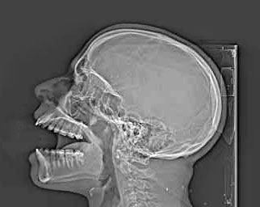

Ficha del catálogo
Radiografía lateral de cráneo
- Sistema
- Óseo
- Modalidad
- RX
- Región
- Cráneo
- Dificultad
- Intermedio
Proyección clásica de la bóveda craneal. Hoy la tomografía ha sustituido a la radiografía en el traumatismo craneal, pero la lateral de cráneo conserva utilidad en ortodoncia, en el estudio de la silla turca y en valoraciones óseas generales.
Técnica
Paciente en decúbito o sentado con el plano sagital medio paralelo al receptor. El rayo central se dirige unos 5 cm por encima del conducto auditivo externo.
Qué observar
- Tablas interna y externa de la bóveda con el diploe entre ambas
- Suturas craneales: Bordes finamente dentados, a diferencia de las fracturas que son rectas y de bordes nítidos
- Surcos vasculares, que se ramifican y tienen bordes esclerosos: No son fracturas
- Silla turca: Tamaño, morfología y densidad del dorso selar
- Senos paranasales y celdillas mastoideas aireados
- Nivel hidroaéreo en el seno esfenoidal, signo indirecto de fractura de base de cráneo
Hallazgos
Bóveda craneal de espesor y densidad normales, con suturas y surcos vasculares de aspecto habitual y silla turca conservada.
Perlas
Para diferenciar una fractura de una sutura o de un surco vascular: La fractura es más radiolúcida (más negra), de bordes rectos y afilados, no se ramifica y no sigue el trayecto anatómico esperado de una sutura.
Diagnóstico diferencial
- Fractura lineal de la bóveda
- Es una línea más radiolúcida que las suturas, de bordes rectos y nítidos, que no se ramifica ni sigue el trayecto anatómico de una sutura ni de un surco vascular.
- Sutura craneal normal o persistente
- Presenta bordes finamente dentados y esclerosos, sigue una localización anatómica conocida y suele ser simétrica con el lado contrario.
- Surco vascular
- Se ramifica de forma arborescente, tiene bordes esclerosos y márgenes paralelos, y su radiolucidez es menor que la de un trazo de fractura.
- Lesión lítica de la bóveda
- Es una zona radiolúcida redondeada u ovalada con destrucción de una o ambas tablas, y no una línea (obliga a considerar mieloma, metástasis o lesiones benignas).
- Alteración de la silla turca por lesión selar
- La silla aparece agrandada, con doble contorno del suelo o erosión del dorso, hallazgos que orientan a masa hipofisaria y exigen resonancia.
Simuladores
- Los pliegues del cuero cabelludo, las trenzas y los objetos externos proyectan líneas que se extienden más allá del contorno del cráneo.
- Las granulaciones aracnoideas y los agujeros emisarios son radiolucideces redondeadas de bordes esclerosos en localizaciones típicas, y no lesiones destructivas.
- La superposición de ambas mitades del cráneo en la lateral hace que estructuras normales de un lado parezcan alteraciones del otro (ayuda saber que la lateral suma los dos lados).
- Las suturas metópica o mendosa persistentes en el adulto pueden confundirse con fracturas si no se conoce su trayecto habitual.
Por modalidad
- RX
- Conserva utilidad en cefalometría ortodóncica, en valoraciones óseas generales y en el control de dispositivos y derivaciones ventriculares.
- TC
- Es el estudio de elección en el traumatismo craneal porque detecta fracturas y, sobre todo, la hemorragia intracraneal, que es lo que cambia la conducta.
- RM
- Aporta la mejor valoración del contenido intracraneal, de la región selar y de las lesiones de la médula ósea del diploe.
- US
- Solo aplicable en el lactante con fontanela abierta, donde permite valorar el contenido intracraneal sin radiación.
Protocolo
El paciente se coloca sentado o en decúbito lateral con el plano sagital medio paralelo al receptor y el plano interpupilar perpendicular a él, evitando la rotación y la inclinación. El rayo central se dirige unos cinco centímetros por encima del conducto auditivo externo. La correcta simetría se comprueba porque las ramas mandibulares y las órbitas se superponen. En cefalometría se emplea una distancia foco-receptor fija y estandarizada con marcadores anatómicos para poder medir de forma reproducible. En el contexto traumático el protocolo correcto no es la radiografía sino la tomografía con ventanas ósea y cerebral.
Clasificación
Las fracturas craneales se describen según sean lineales, deprimidas, conminutas o diastásicas, y según afecten a la bóveda o a la base. Las de base se agrupan por regiones, y su sospecha se apoya en signos indirectos como la ocupación del seno esfenoidal o de las celdillas mastoideas. En cefalometría se aplican análisis basados en puntos y planos craneométricos que permiten clasificar el patrón esquelético en clases según la relación entre maxilar y mandíbula. Para la valoración clínica del traumatismo se emplea la escala de coma de Glasgow, que determina la indicación del estudio.
Errores frecuentes
- Emplear la radiografía simple para descartar lesión intracraneal en un traumatismo, cuando un cráneo sin fractura no excluye hemorragia.
- Confundir suturas y surcos vasculares con fracturas por no atender a la ramificación y a la esclerosis de sus bordes.
- No revisar los senos paranasales y las mastoides, cuya ocupación puede ser el único signo de fractura de base.
- Pasar por alto lesiones líticas de la bóveda por centrar la lectura solo en la búsqueda de trazos lineales.

craneo lateral suturas silla turca boveda normal